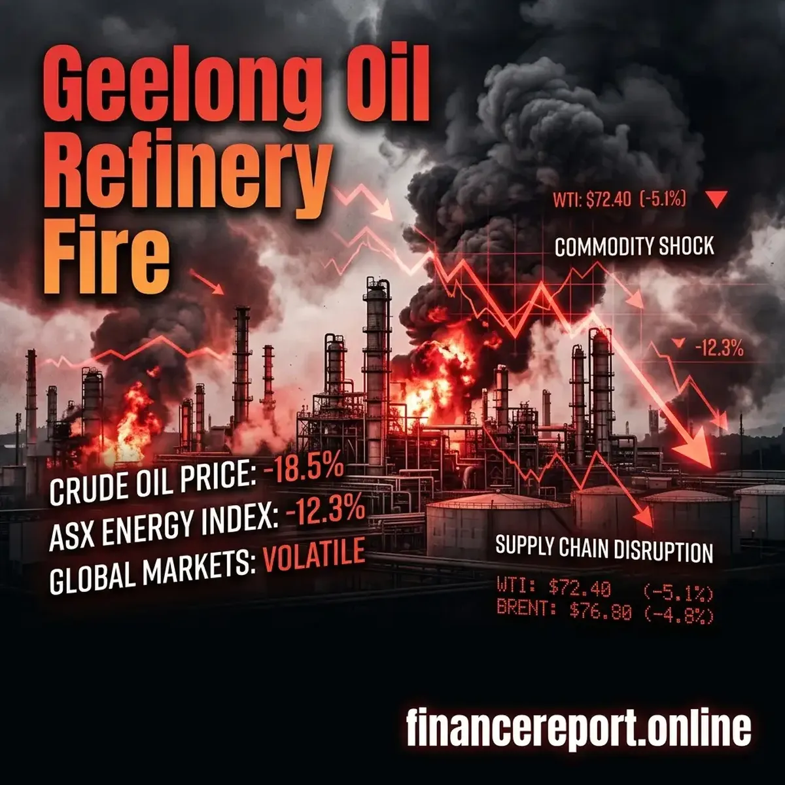

Euphoria Season 3 Premiere: Date & How to Watch
Get the 'Euphoria' Season 3 premiere details, release date, and full episode schedule. Learn how to watch Zendaya return to HBO Max in April 2026.
[Read more]
The massive inferno at the deeply critical geelong oil refinery has left significant shockwaves across the Australian economic landscape. The viva energy geelong refinery fire, which took emergency crews over 12 hours to bring under control, has immediately sparked widespread financial concerns—from a dramatic pause on the ASX trading floor to impending fuel price spikes.
⭐🔥 Recommended: Gift link
While thankfully no casualties were reported throughout the catastrophic structural event, the geelong refinery fire today stands as a stark warning about the fragility of national energy infrastructure. The Mogas (motor gas) section took the brunt of the damage, significantly impairing the facility's ability to refine domestic petrol at a time when global energy supplies remain tightly squeezed.
Immediately following the disaster, Viva Energy requested a complete trading halt on the Australian Securities Exchange (ASX), seeking space to legally assess the crippling scope of the damage. For retail and institutional investors, this move signaled serious impending volatility.
Major financial analysts at Macquarie were rapid in their damage assessments. Current modeling predicts that Viva Energy could absorb a mammoth earnings hit traversing anywhere from $20 million to $70 million. The exact figures hinge heavily on exactly how many weeks (or months) the core mogas supply chains remain effectively severed. The broader insurance sector is also watching closely; this incident represents a colossal stress test for industrial property damage and complex business interruption claims.
You can read more directly via The Motley Fool Australia's financial coverage surrounding Viva's market position.
Beyond isolated corporate earnings, the viva energy geelong refinery fire actively threatens the everyday bank accounts of regular citizens. The Geelong facility provides an astonishing 50% of Victoria's fuel reserves and equates to 10% of Australia's entire nationwide demand. The forced reduction in localized output leaves a severe vacuum.
Viva Energy has formally stated they will leverage international imports to cover the shortfall. However, doing so at premium, spontaneous global market rates effectively guarantees that those heavy costs will trickle straight down to the consumer pump. Drivers should brace to pay higher premiums at the station merely days following the infrastructure collapse.
⭐🔥 Sponsored Recommended: Bonus link
Stay informed regarding the full incident timeline at The Guardian Australia.
Whether you're holding equities in the energy sector or merely watching the numbers tick upward on your next fill-up, the economic residue from the geelong refinery fire today proves just how deeply intertwined national infrastructure and daily personal finance truly are.
Check out this URL to watch multiple videos from various social media platforms in one place: Click here

Get the 'Euphoria' Season 3 premiere details, release date, and full episode schedule. Learn how to watch Zendaya return to HBO Max in April 2026.
[Read more]
A massive fire at the Viva Energy oil refinery in Geelong was extinguished after 12 hours. Discover the cause and the potential impact on Australian petrol prices amid a global fuel crunch.
[Read more]
Rory McIlroy captures his career Grand Slam winning the 2026 Masters. He beat Scheffler by one shot to claim the $4.5M prize at Augusta National.
[Read more]
In a historic shift, Peter Magyar's Tisza Party wins the 2026 Hungarian elections, ending Viktor Orbán's 16-year era.
[Read more]
Barcelona crash out of the UEFA Champions League 2026 quarter-finals as Atletico Madrid advance 3-2 on aggregate. Lamine Yamal and Ferran Torres shone but Eric Garcia's red card sealed Barca's fate.
[Read more]